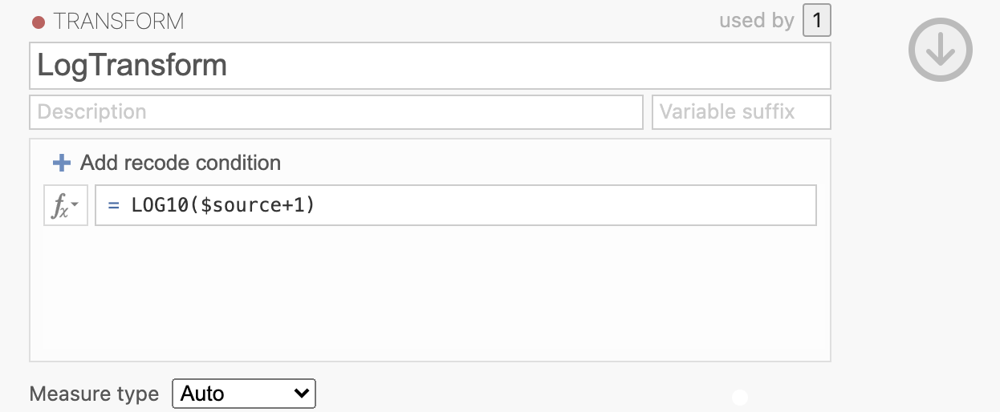

Week 7 : Testing data distributions and Non-parametric alternative tests
This week we will explore how to check the assumptions of hypothesis tests and make sure that we’re using the right tests. We will introduce the idea of transforming data to squeeze the data into the shape of a normal distribution.
| Quantitative Methods | |
|---|---|
| Assumptions of parametric tests | |
| Log transforms and Box-Cox transforms | |
| Histograms |
| Data Skills | |
|---|---|
| Compute data transformations using Jamovi | |
| Run non-parametric alternative tests in Jamovi |
| Open Science | |
|---|---|
| Replicate part of a published analysis |
This tutorial refers to a video in which participants watched unpleasant events to simulate a traumatic experience in the lab. The content of this video is not disclosed or dicussed in any more detail than this during this tutorial - those who are interested can find more information in methods section the published article. This tutorial does explore the emotional impact that the video has on participants.
1. The Dataset
Flashbacks and intrusive thoughts are a core features of post-traumatic stress disorder (PTSD). These can be highly distressing and disruptive for the person suffering from them and there are few early interventions that are known to help.
One unexpected and intriguing proposal in the last few decades suggests that carrying out very engaging visuo-spatial tasks with a neutral emotion in the immediate aftermath of a traumatic event may help reduce later flashbacks (Holmes et al. 2009). This is thought to be due to intense visuo-spatial processing disrupting the formations of the flashback memories, which are themselves flashbacks.
This week, we’re going to look at the dataset from one experiment attempting a replication and extension of this effect (James et al. 2015). The abstract of the paper is below
Memory of a traumatic event becomes consolidated within hours. Intrusive memories can then flash back repeatedly into the mind’s eye and cause distress. We investigated whether reconsolidation—the process during which memories become malleable when recalled—can be blocked using a cognitive task and whether such an approach can reduce these unbidden intrusions. We predicted that reconsolidation of a reactivated visual memory of experimental trauma could be disrupted by engaging in a visuospatial task that would compete for visual working memory resources. We showed that intrusive memories were virtually abolished by playing the computer game Tetris following a memory-reactivation task 24 hr after initial exposure to experimental trauma. Furthermore, both memory reactivation and playing Tetris were required to reduce subsequent intrusions (Experiment 2), consistent with reconsolidation-update mechanisms. A simple, noninvasive cognitive-task procedure administered after emotional memory has already consolidated (i.e., > 24 hours after exposure to experimental trauma) may prevent the recurrence of intrusive memories of those emotional events
This experiment shows participants a 12-minute distressing film to simulate a traumatic event. Participants completed three sessions in the experiment day 0, day 1 and day 7. They also kept a diary recording their thoughts and memories about the film throughout the week. Participants viewed the film on day 0 and completed a range of experimental tasks on days 1 and 7.
Crucially, participants were allocated to one of four conditions in the time immediately following the video. One group played tetris as a distraction, a second group completed a reactivation task which was throught to help reduce the emotional response to the video, a third group did both tetris and reconsolidation and a fourth group was a no-task control group.
2. The Challenge
This week - we will explore two of the four conditions to test the following hypothesis:
Playing tetris will after a trumatic event will reduce number of subsequent intrusive memories
Along the way, we’ll take a detailed tour of our options when working with non-normally distributed data.
The theme this week is PRECISION! we need high precision when interpreting and analysing results, the exercises this week are designed to give you practice in paying close attention to the details of your data…
3. Dataset description
Let’s start by getting familiar with the dataset. Load the file into Jamovi and take a look at the ‘Variables’ tab.

The creators of this dataset have helpfully included annotations for many of the variables they’ve measured. This is extremely useful for us and definitely worth a few moments for you to do the same when working with your own data.
Take a moment to read through the variable descriptions. You’ll need to refer back to this list throughout the session to find relevant variables.
Next - take a look at the data sheet and the Condition variable. These relate to the different conditions in the experiment - all participants watched the film containing traumatic events and the four conditions describe what participants did after watching the film on day 1 of the experiment.
| Condition | Description |
|---|---|
| No-Task Control | Participants sit quietly |
| Reactivation+Tetris | Participants rewatch the film and then play Tetris |
| Tetris Only | Participants play Tetris |
| Reactivation Only | Participants rewatch the film |
Participants were asked to keep an diary of any intrusive thoughts that they had prior to the experiment (day zero) and during the week after the experiment (days one to seven).
4. Is participant performance on Tetris normally distributed?
Let’s start by taking a look at how participants in the conditions that played Tetris scored during their game time. Compute descriptive statistics on the Tetris_Total_Score variable and take a moment to get a sense of what it is telling you.
Use the descriptive statistics of Tetris_Total_Score to answer the following questions in the spaces provided.
The average Tetris score was .
The most successful Tetris player scored points.
The Tetris scores are with a skewness of .
The Shapiro-Wilk statistic has a value of W = and the p-value indicates that the scores are
We should use statistical approaches when analysing Tetris_Total_Score.
Let’s use this data to test a hypothesis.
Performance whilst playing Tetris will be different at different times of day.
We can test this with an independent samples t-test as we’ve done in previous weeks. Set up the t-test and include the following:
- Welchs’ t-test
- Mann-Whitney U
- Effect Size
- Homogeneity test
- Normality test
Let’s unpack the results.
4. Is Tetris effective at reducing intrusive memories?
On to our main hypothesis. (James et al. 2015) were most interested in the combination of the reactivation task and the tetris intervention and their effect on intrusive memories about the film. Let’s focus on only the two conditions we can compare with a t-test.
Set up a Jamovi data filter to focus our analysis on only the two conditions “No-Task Control” and “Reactivation+Tetris” conditions. Take a look at week 3 section 4 to revise data filters if you need to.
You can use this code to select both conditions together:
Condition == "No-Task Control" or Condition == "Reactivation+Tetris"
Finally, compute an independent samples t-test to test the following:
Performing a Reactivation and Tetris task changes the number of intrusive memories in the week after watching a traumatic film.
Take a moment to understand the results and compute any additional statistics that you might need to help your interpretation and reporting.
Use your results on the independant samples t-test to answer the following questions in the spaces provided.
There are participants in each group.
The Shapio-Wilk statistic indicated that the data are , W = , p <
Levene’s test for homogeneity of variance indicated that we assume homogeneity of variance between the No-Task and Reactivation+Tetris groups, F(1, 32) = , p = .
A Mann-Whitney U test showed difference in intrusive memories in the week after the film between the No Task (Median=) and the Reactivation plus Tetris (Median=) groups. U = , p = , Rank Biserial Correlation = .
5. Control analyses testing for potential confounds.
Our hypothesis test gives statistical support to the idea that playing tetris reduces intrusive memories - but could there be other explanations? This experiment is likely not perfect and it is possible that some bad luck in the data collection could have impacted the results. In this section we’ll validate a few additional factors in the experimenta..
Baseline differences in intrusive memories
(James et al. 2015) collected data variable to act as a control condition and rule out one possible confound in the experiment. Days_Zero_Image_Based_Intrusions_in_Intrusion_Diary indicates the number of intrusive memories each participant had in the time before the experiment.
There isn’t a huge number of participants in each condition, it is possible that one group of participants was having more or less intrusive memories to begin with - irrespective of the experimental procedure.
Compute a t-test to test the following:
There are no differences in the number of instrusive memories between the two experimental group BEFORE the experiment started.
Take a moment to understand the results and compute any additional statistics that you might need to help your interpretation and reporting.
Use your results on the independant samples t-test to answer the following questions in the spaces provided.
The participant in the ‘No-Task Control’ group had mean of intrusive memories prior to the experiment starting.
The participant in the ‘Reactivation+Tetris’ group had mean of intrusive memories prior to the experiment starting.
The Shapio-Wilk statistic indicated that the data are , W = , p =
A Mann-Whitney U test showed difference in intrusive memories in day before between the No Task (Median=) and the Reactivation plus Tetris (Median=) groups. U = , p = , Rank Biserial Correlation = .
Change in mood due to watching the film
Another important factor to check was that the film actually changed how the participants felt. If the film didn’t do anything to impact the participants emotions then it is possible that we don’t actually understand the source of the difference we saw in the main hypothesis.
The film is the main experimental manipulation that so it is critical to check that it worked as we expected.
Compute paired samples t-test’s to check the following:
Watching the traumatic film will change participants emotional state.
Check ALL of participants reported sadness, hopelessness, fear, horror and anxiousness.
Take a moment to understand the results and compute any additional statistics that you might need to help your interpretation and reporting.
Use your results on the independant samples t-test to answer the following questions in the spaces provided.
True or False? The data variables for these factors are Normally Distributed according to Shaprio-Wilk statistics.
- Sadness
- Hopeless
- Fear
- Horror
- Axious
How did the following factors change or not after watching the film?
- Sadness after watching the film
- Hopelessless after watching the film
- Fear after watching the film
- Horror after watching the film
- Axiousness after watching the film
7. Transforming non-nomrally distributed data
There are times when we might not want to use a non-parametric test, for example if we specifically want to interpret the mean of the data rather than the median or if we’re running many similar tests and we don’t want to be switching back and forth between parametric and non-parametric tests.
We have another option when working with non-normal data. This is to apply a reversible transformation to the data observations in a variable to change the distribution to one that is closer to being normally distributed. When this process works, we are able to run the parametric test on the transformed data rather thans swapping to the non-parametric alternative.
This is valid when the transformation preserves the relationships in the dataset, that is it maintains the relative order of the observations. If data point A is larger than B before transformation then it should still be larger after the transformation. It is fine if the transformation changes the numbers themselves - we just have to be careful when making an interpretation.
We’ll use the LOG data transformation in this section
| Transform | Explanation |
|---|---|
| Log Transform | The logarithm function, typically base 10 (log), is applied to each data point. |
One downside of the log transform is that it has a weird value when the datapoint being transformed is zero or negative. log(0) equals negative infinity! this will break a lot of analyses that happen afterwards but fortunately there is a straightforward solution.
When your data contains zeros or negatives you can simply add an offset value to make your data positive and then apply the log transform. Again, this is valid as long as we are preserving the relationships within our data by adding exactly the same offset to every single point in the dataset.
We can easily transform variables using Jamovi and have done something very similar when computing variables in previous weeks.
You can read about transforming variables in detail on the Jamovi documentation page on transforming variables. There are a few different steps but they are all straightforward.
First, head to the ‘Data’ view and right click on the variable you want to transform, in this case we want Days_One_to_Seven_Image_Based_Intrusions_in_Intrusion_Diary
This will open a dialogue box where you can define the new variable. Give your new variable a descriptive name and make sure that the ‘Source variable’ is the one that you expect. Note that you might see a ‘Circular definition’ warning until you rename your variable.
Next we need to specify the transformation that we want to use. Click into the ‘using transform’ drop-down box and select “Create New Transform”.
Here you can define the transformation that you want to apply. You can define a single transform and apply it to multiple variables. Give the transformation a descriptive name and specify that you want the transfrom to apply the LOG10() function to the $source variable. ($source is a way to tell Jamovi to use ‘whichever variable is passed into the transform’ rather than defining the transform on only 1 variable here.).
We also include a small offset value of +1 here. This is as some participants had no intrusive memories at all and we want to avoid issues with computing log(0) in our analysis.

You can click on the Fx logo to select functions from a list if you prefer, there are lots of pre-defined options.
Once you’re happy with the transformation, you can close the transformation definition dialogue and specify that we want to use the ‘LogTransform’ that we just defined to transfrom Days_One_to_Seven_Image_Based_Intrusions_in_Intrusion_Diary to make our new variable.
There are a lot of steps here - but each is fairly straightforward. Ask your tutor if you get stuck.
Now that we have our new variable we can explore what it has done. Let’s compare the descriptive statistics for the original and the transformed variable.
Finally - let’s see if we can use our transformed variables to compute a parametric t-test. Repeat the independent samples t-test from earlier but include all three variables in the ‘Dependent Variables’ box. Make sure to include
Days_One_to_Seven_Image_Based_Intrusions_in_Intrusion_Diary- original dataDays_One_to_Seven_Transformed- Log transformed data
Use your results on the independant samples t-test to answer the following questions in the spaces provided.
With the original data, a Shapiro-Wilk statistic found a difference from a normal distribution, W=, p = . We can proceed with .
Using the log-transformed data, a Shapiro-Wilk statistic found a difference from a normal distribution, W=, p = . Levene’s test found that the we assume that the groups have homogeneity of variance, F(1, 34) = , p = . We can proceed with .
Note that Welch’s t-test is valid whether or not we can assume homogeneity of variance…
8. Summary
We have explored an interesting dataset in some detail and worked with serveral different analysis approaches. Specifically, we have several options when working on checking the assumptions of our analyses. We have to be careful when computing and reporting hypothesis tests that we’re using the correct tests in a way that is supported by the data. Sometimes we can use a transform to continuous using parametric tests when the assumptions are not supported but this will not always work.